04/12/2025 — 4 bệnh nhân đau ngực, LVH và troponin tăng: ai bị nhồi máu cơ tim do tắc (OMI)?
Bản dịch tiếng Việt của bài "4 patients with chest pain, LVH, and elevated troponin: which has Occlusion MI?" – Dr. Smith’s ECG Blog. Giữ nguyên toàn bộ 15 hình ảnh của bản gốc.

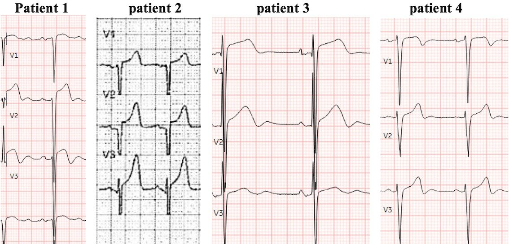
Tác giả: Jesse McLaren
Bốn bệnh nhân đến viện vì đau ngực, điện tâm đồ có phì đại thất trái (LVH) và troponin tăng. Bệnh nhân nào bị tắc cấp động mạch vành?
Bệnh nhân 1: 50 tuổi, không có tiền sử bệnh lý, đau ngực khởi phát khi gắng sức nhưng vẫn tiếp diễn, cảm giác như ợ nóng

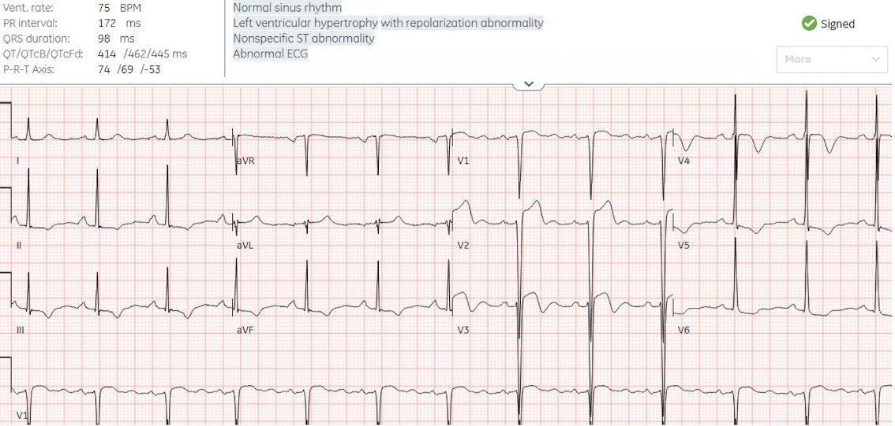
–
Bệnh nhân 2: Điện tâm đồ trước viện của một bệnh nhân 55 tuổi không có tiền sử bệnh lý, đau ngực khi gắng sức và ngất, đội cấp cứu ngoài viện (EMS) phát báo động STEMI (Code STEMI)

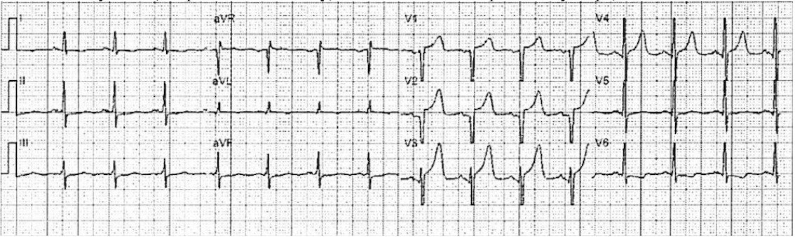
–
Bệnh nhân 3: 60 tuổi, tiền sử tăng huyết áp, một tuần nay đau ngực và khó thở khi gắng sức

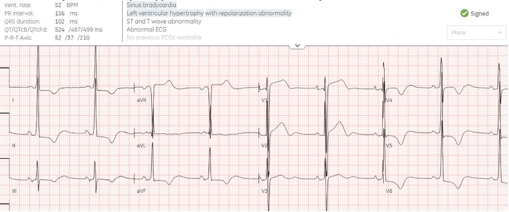
–
Bệnh nhân 4: 55 tuổi, không có tiền sử bệnh lý, đau ngực khi gắng sức 3 ngày nay

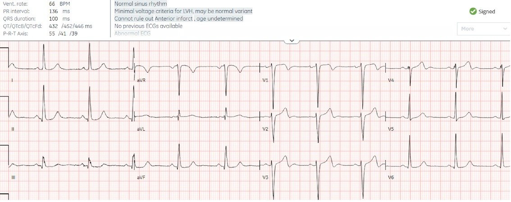
–
LVH: mô hình STEMI và mô hình OMI
LVH gây ra các thay đổi ST/T thứ phát, ngược hướng và tương xứng với QRS, có thể giống STEMI và hội chứng Wellens. Nhưng vì tiêu chuẩn STEMI đo mức ST chênh lên một cách tách biệt (bỏ qua các nguyên tắc đọc điện tâm đồ về tính tổng thể và tính tương xứng (proportionality)), nên không có cách nào phân biệt LVH có hay không có tắc cấp động mạch vành. Vì vậy STEMI được định nghĩa là ST chênh lên khi không có LVH. Nhưng điều này tạo ra một tình huống khó xử rõ ràng trong chẩn đoán: làm sao nhận ra tắc cấp động mạch vành khi có LVH. Hệ quả là STEMI dương tính giả dẫn đến kích hoạt phòng thông tim (cath lab) không cần thiết (nhất là với máy điện tâm đồ trước viện vốn cắt cụt điện thế), và STEMI âm tính giả với tái tưới máu chậm trễ. Tình hình càng tệ hơn do chẩn đoán ra viện “STEMI” hay “NSTEMI” phản ánh thời gian đến lúc điều trị nhiều hơn là tiêu chuẩn STEMI. (Alencar, Meyers, Frick, McLaren, Smith. Door-to-balloon time outperforms ST-segment elevation in predicting the STEMI vs NSTEMI final diagnosis. J Clin Med 2025)
Armstrong đề xuất rằng tỷ lệ STE/RS>25% có thể nhận ra LVH kèm STEMI, nhưng ở những chuyển đạo có sóng S lớn, tiêu chuẩn này đòi hỏi ST chênh lên rất nhiều và sẽ bỏ sót các trường hợp tắc kín đáo. (Xem bài của Dr. Smith chỉ ra những khiếm khuyết chết người của nghiên cứu Armstrong). Troponin ban đầu thường không giúp ích trong tình huống khó xử này, vì nó có thể trấn an sai trong tắc cấp động mạch vành, hoặc tăng do bệnh tim tăng huyết áp khi không có tắc cấp động mạch vành. Nhưng nhờ dùng tính tổng thể và tính tương xứng, Queen of Hearts đã được huấn luyện để phân biệt LVH có và không có OMI, giúp giảm các lần kích hoạt STEMI dương tính giả và nhận ra LVH kèm OMI. Hãy xem các bệnh nhân đã được xử trí ra sao, và Queen đã thể hiện thế nào
Bệnh nhân 1: 50 tuổi, không có tiền sử bệnh lý, đau ngực khởi phát khi gắng sức nhưng vẫn tiếp diễn, cảm giác như ợ nóng

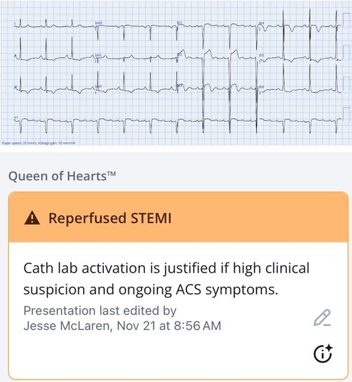
PMcardio for Individuals nay đã có mô hình Queen of Hearts mới nhất, khả năng giải thích của AI (bản đồ nhiệt màu xanh) và %phân suất tống máu thất trái. Tải ngay cho iOS hoặc Android: https://individuals.pmcardio.com/app/promo?code=DRSMITH20. Là thành viên cộng đồng của chúng tôi, bạn có thể dùng mã DRSMITH20 để được giảm giá độc quyền 20% cho năm đầu tiên của gói thuê bao hằng năm. Tuyên bố miễn trừ: Một số Mô-đun AI ECG là thiết bị y tế mang dấu CE theo EU MDR và chỉ được chứng nhận lưu hành tại Liên minh châu Âu và Vương quốc Anh. Công nghệ PMcardio chưa được Cục Quản lý Thực phẩm và Dược phẩm Hoa Kỳ (FDA) cho phép dùng trên lâm sàng tại Hoa Kỳ.
Quay lại Bệnh nhân 1:
Có LVH với sóng S ở V2 sâu 35, nên cần ST chênh lên 9mm mới đạt tiêu chuẩn Armstrong.
Smith: Khác với tiêu chuẩn Smith cho LBBB, “tiêu chuẩn” Armstrong cho LVH được xây dựng với phương pháp rất kém và RẤT KÉM nhạy (không đủ nhạy). Trong ca này, quy tắc 25% của họ đúng ở chuyển đạo V3 (3/11 = 27%), và quy tắc chỉ cần một chuyển đạo vượt quá 25%.
Queen of Hearts nhận ra OMI do LAD kèm các dấu hiệu tái tưới máu trên điện tâm đồ, nhưng về lâm sàng bệnh nhân vẫn còn đau vào lúc ghi điện tâm đồ. Điện tâm đồ được ghi lại 15 phút sau, khi bệnh nhân cho biết đau đã giảm nhưng vẫn còn

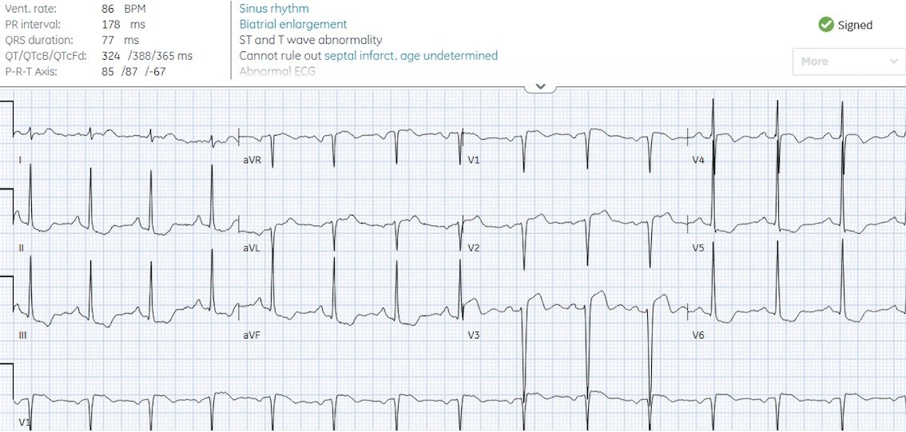
STE ở V2 ít hơn nhưng dấu hiệu tái tưới máu ở V3 cũng ít hơn, và STD ở thành dưới-bên nhiều hơn.
Smith: trên điện tâm đồ này, không có chuyển đạo nào đạt quy tắc 25%. V2 là 2/13 = 15,4% V3 là 4/25 = 16%. Quy tắc theo kinh nghiệm cá nhân của tôi cho OMI do LAD trong bối cảnh LVH (sóng S sâu ở V1-V3-4) là bất kỳ STE nào trên 15% đều rất đáng nghi.
Smith tiếp tục: Tôi đã cố nghiên cứu chủ đề này, nhưng rất khó vì rất khó tìm được các ca LVH biểu hiện bằng sóng S sâu từ V1 đến V3-4. Những ca như vậy rất hiếm gặp. Vì sao chúng hiếm? Dựa trên bằng chứng kinh nghiệm, tôi tin rằng chúng hiếm vì khi bệnh nhân đã có sẵn LVH trên điện tâm đồ với sóng S sâu, tắc LAD sẽ xóa mất điện thế sóng S, tương tự biến dạng phần cuối QRS ở bệnh nhân có điện thế bình thường.
Queen giờ gọi đây là OMI:

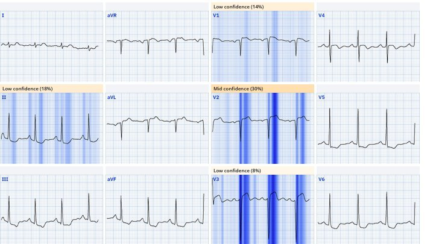
Phòng thông tim được kích hoạt: tắc 100% đoạn giữa LAD, kèm tắc hoàn toàn mạn tính (CTO) RCA và hẹp 80% động mạch mũ. Đặt stent LAD. Troponin I đầu tiên là 2.000 ng/L và đỉnh 10.000ng/L. Điện tâm đồ lúc ra viện cho thấy sóng T đảo ngược do tái tưới máu:

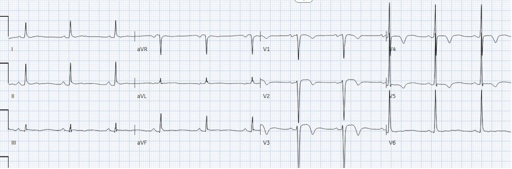
Chẩn đoán ra viện là “STEMI” vì được tái tưới máu nhanh, dù không có điện tâm đồ nào được diễn giải cuối cùng là STEMI, vì không thể áp dụng tiêu chuẩn STEMI khi có LVH.
Smith: chỉ những bác sĩ hàn lâm nhất mới biết rằng “tiêu chuẩn STEMI theo milimét” loại trừ LVH. Với tôi thế cũng được.
Queen of Hearts biết khi nào ST chênh lên của LVH KHÔNG phải do OMI. Trong nghiên cứu gần đây của chúng tôi trên JACC: Cardiovascular Interventions, AI-Enabled ECG Analysis Improves Diagnostic Accuracy and Reduces False STEMI Activations: A Multicenter U.S. Registry, Queen đã giảm 91% số lần kích hoạt dương tính giả ở bệnh nhân LVH!! (từ 44 xuống 4).

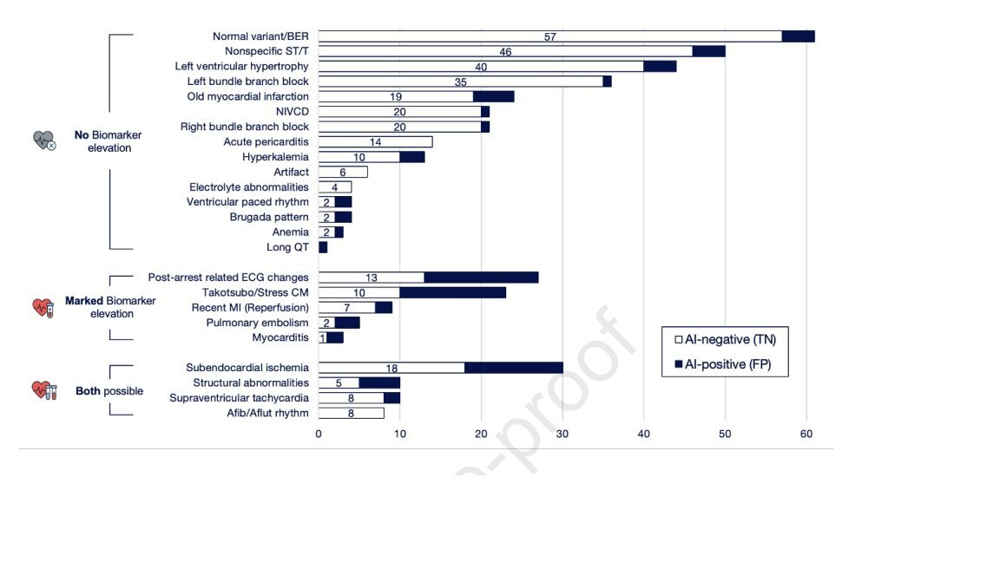
Bệnh nhân 2: 55 tuổi, không có tiền sử bệnh lý, đau ngực khi gắng sức và ngất, EMS phát báo động STEMI dựa trên điện tâm đồ trước viện.

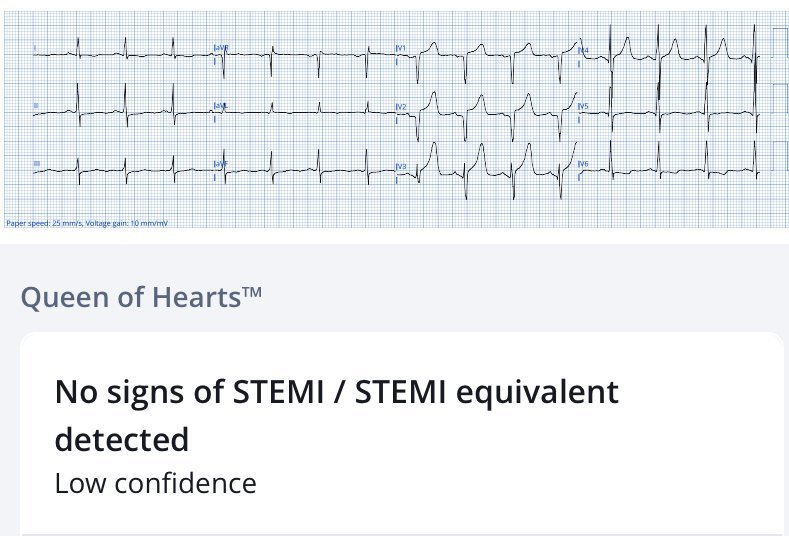
Có cắt cụt điện thế, điều rất thường gặp ở điện tâm đồ trước viện và khiến việc đánh giá tính tương xứng trở nên khó khăn, nhưng có điện thế chồng lấn ở V4-5 và hình dạng đoạn ST không đối xứng. Dù điện thế bị cắt cụt, Queen không thấy dấu hiệu OMI, nhưng với độ tin cậy thấp.
Điện tâm đồ được ghi lại lúc đến viện, cho thấy đầy đủ điện thế, và giờ Queen tin chắc không có dấu hiệu OMI trên điện tâm đồ

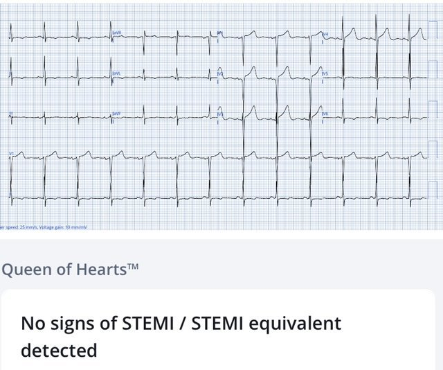
Phòng thông tim được hủy và bệnh nhân được chuyển đến khoa cấp cứu để đánh giá. Troponin tăng từ 30 lên 55 ng/L, bệnh nhân được nhập viện với chẩn đoán NSTEMI. Chụp mạch vành cho thấy bệnh động mạch vành tối thiểu và siêu âm tim cho thấy hẹp van động mạch chủ nặng (giải thích đau ngực khi gắng sức và ngất), được điều trị bằng thay van động mạch chủ.
–
Bệnh nhân 3: 60 tuổi, tiền sử tăng huyết áp, một tuần nay đau ngực và khó thở khi gắng sức

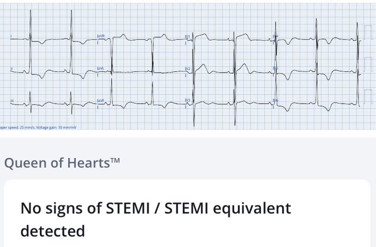
Điện thế lớn và chồng lấn, với sóng ST/T ngược hướng và tương xứng, thứ phát do LVH. Bác sĩ cấp cứu đã kích hoạt phòng thông tim nhưng bác sĩ tim mạch đã hủy. Các lần troponin liên tiếp ổn định ở 17ng/L (bình thường <16 ở nữ) và siêu âm tim chẩn đoán bệnh cơ tim phì đại.
Bệnh nhân 4: 55 tuổi, không có tiền sử bệnh lý, đau ngực khi gắng sức 3 ngày nay

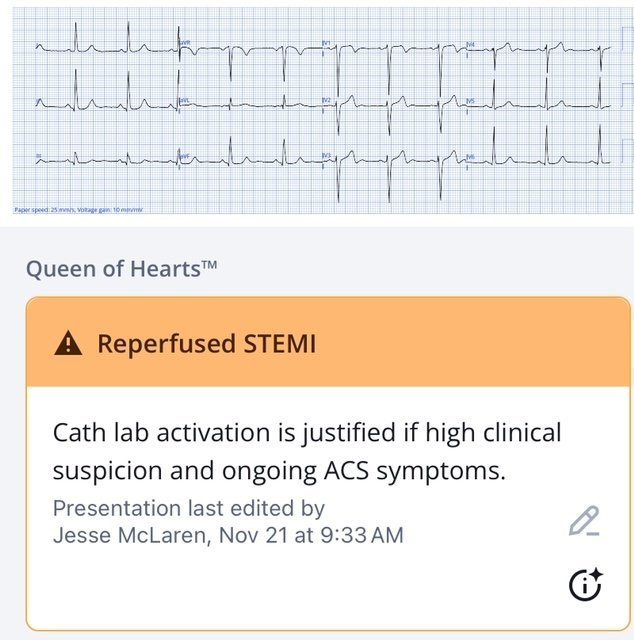
Chỉ đạt tiêu chuẩn LVH ở mức tối thiểu, khiến sóng T hai pha ở V2-4 đáng lo là thay đổi thiếu máu cục bộ nguyên phát do tái tưới máu (chứ không phải thứ phát do LVH), và Queen đã nhận ra điều này. Hội chứng Wellens đòi hỏi triệu chứng thiếu máu cục bộ đã hết và sóng R còn nguyên (tức là tái tưới máu trước khi có nhồi máu lớn); nhưng V4 đã mất gần hết sóng R, và khi troponin đầu tiên trả về 8.000ng/L thì ghi chép điều dưỡng ghi nhận bệnh nhân vẫn còn đau ngực.
Nhưng bệnh nhân được nhập viện với chẩn đoán ‘NSTEMI nguy cơ cao’, và sau khi troponin tăng lên 12.000 hai giờ sau đó, bệnh nhân mới được đưa vào phòng thông tim. Thời gian từ cửa đến phòng thông tim là 5 giờ 40 phút. Có tắc 100% đoạn giữa LAD, troponin đỉnh là 30.000 ng/L, với EF 48%. Nhưng vì bệnh nhân được nhập viện với chẩn đoán NSTEMI và được tái tưới máu chậm, chẩn đoán ra viện vẫn là NSTEMI dù tắc 100%. Điện tâm đồ ngày hôm sau cho thấy sóng T đảo ngược do tái tưới máu rõ hơn:

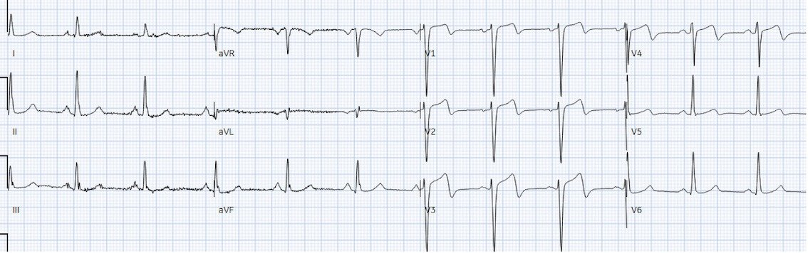
–
Như vậy là bốn bệnh nhân đau ngực, có LVH trên điện tâm đồ và troponin tăng. Làm sao nhận ra ai bị tắc cấp động mạch vành:
- Tiêu chuẩn STEMI: không áp dụng được, nên chỉ 1 ca có diễn giải cuối cùng là “STEMI” dù có hai ca bị OMI. Về mặt kỹ thuật, ca STEMI đó là một OMI STEMI âm tính (STEMI(-) OMI), nhưng có chẩn đoán cuối cùng là STEMI vì thời gian từ cửa đến bóng ngắn.
- Mô hình STEMI: trên thực tế mô hình này dẫn đến một lần kích hoạt STEMI dương tính thật, hai lần kích hoạt dương tính giả đã bị hủy, và một STEMI âm tính giả với tái tưới máu chậm trễ. Ca dương tính thật (bệnh nhân 1) và ca STEMI âm tính giả (bệnh nhân 4) có cùng kết quả chụp mạch là tắc 100% đoạn giữa LAD, nhưng ca đầu có chẩn đoán ra viện là “STEMI” vì được tái tưới máu nhanh, còn ca sau có chẩn đoán ra viện là “NSTEMI” vì tái tưới máu chậm.
- Mô hình OMI + AI: Queen of Hearts, được huấn luyện để đọc điện tâm đồ dựa trên tính tổng thể và tính tương xứng, đã phân biệt chính xác LVH có OMI với LVH không có OMI.
Điều cần nhớ
- STEMI được định nghĩa là STE khi không có LVH, nên các tiêu chuẩn này không thể phân biệt LVH có hay không có OMI
- Troponin đầu tiên không thể phân biệt OMI với bệnh tim tăng huyết áp
- LVH gây ra các thay đổi ST/T thứ phát, ngược hướng và tương xứng – vì vậy dùng tính tổng thể và tính tương xứng có thể phân biệt thay đổi tái cực thứ phát với thay đổi thiếu máu cục bộ nguyên phát chồng lên
- Queen of Hearts đã được huấn luyện để nhận ra LVH +/- OMI, giúp giảm kích hoạt dương tính giả và nhận ra các trường hợp tắc kín đáo
- Tái tưới máu đòi hỏi bằng chứng cả lâm sàng lẫn điện tâm đồ: triệu chứng thiếu máu cục bộ đã hết nhưng điện tâm đồ vẫn còn dấu hiệu tắc, hoặc sóng T đảo ngược (TWI) do tái tưới máu nhưng vẫn còn triệu chứng thiếu máu cục bộ, đều cho thấy tình trạng tắc vẫn đang tiếp diễn
- Chẩn đoán ra viện nên dựa trên OMI và NOMI (kết cục của bệnh nhân), chứ không phải STEMI và NSTEMI (thời gian đến lúc điều trị)
Các nghiên cứu gần đây về Queen of Hearts:
-Baker P, Karim SR, Smith SW, và cs. Artificial intelligence driven prehospital ECG interpretation for reduction of false positive emergent cardiac catheterization lab activations. A retrospective cohort study. Prehosp Emerg Care 2025;29(3):218-226
-Shroyer S, Mehta S, Thukral N, và cs. Accuracy of cath lab activation decisions for STEM-equivalent and mimic ECGs: physicians vs AI (Queen of Hearts by PMcardio). Am J Emerg Med 2025 Nov;97:193-199
-Herman R, Mumma BE, Hoyne JD, và cs. AI-enabled ECG analysis improves diagnostic accuracy and reduces false STEMI activations: a multicenter US registry. JACC Cardiovasc Interv 2025 Oct 15: S1936-8798(25):02600-7
= = =
======================================
BÌNH LUẬN CỦA TÔI, bởi KEN GRAUER, MD (4/12/2025)
Một bài viết xuất sắc và sâu sắc của Dr. McLaren, chứng minh được luận điểm của nó: Chẩn đoán OMI cấp ( = tắc cấp động mạch vành) có thể cực kỳ khó khi có LVH rõ rệt.
- Chẩn đoán OMI cấp khi có LVH rõ rệt càng khó hơn nữa — khi đồng thời có một dạng bệnh tim đáng kể khác. Trong những trường hợp như vậy — quyết định có thông tim hay không (và nếu có — thì khi nào) trở thành một thách thức thực sự.
= = =
THÚ NHẬN: Tôi đã gặp khó khăn khi đọc 4 bản ghi ban đầu này.
- Ngay cả khi tôi lập tức nhận ra ở Bệnh nhân #2 rằng biên độ QRS bị cắt cụt trên bản ghi ban đầu trước viện — tôi biết mình vẫn phải quyết định XEM các sóng T rất nhọn ở thành trước có tương xứng với độ sâu bất kể là bao nhiêu của các sóng S thành trước hay không — và ngay cả khi có tương xứng — vẫn băn khoăn không biết trường hợp LVH rõ rệt này có thể đang che giấu điều gì bên trong những phức bộ QRST khổng lồ đó.
- “Thông điệp” cần nhớ của tôi từ bài viết của Dr. McLaren như sau: i) Chúng ta nên yên tâm khi biết rằng sự hiện diện của LVH rõ rệt có thể khiến việc khẳng định hay loại trừ tắc cấp động mạch vành một cách tự tin chỉ dựa trên điện tâm đồ ban đầu trở nên khó khăn (nếu không muốn nói là không thể); — và, ii) Trong những ca khó này, điều giúp ích rất nhiều có thể là tìm một điện tâm đồ trước đây — và/hoặc ghi lại điện tâm đồ sau một thời gian ngắn — làm troponin liên tiếp — khai thác bệnh sử kỹ lưỡng hơn — và đặc biệt là siêu âm tim tại giường (tốt nhất là làm trong lúc đau ngực — vì khi đó có cơ hội lớn nhất phát hiện rối loạn vận động thành khu trú).
- Áp dụng các “Thông điệp” cần nhớ của tôi cho Bệnh nhân #2 (người được phát hiện hẹp van động mạch chủ khít cần thay van) — bệnh sử “đau ngực khi gắng sức và ngất” cung cấp một manh mối ban đầu kín đáo, ở chỗ dù các triệu chứng này rõ ràng có thể liên quan đến bệnh mạch vành nền — chúng lại ít giống bệnh sử của một biến cố cấp. Nghe tim có thể đã cho thêm một manh mối khác (dù thực tế lâm sàng là độ lớn và độ thô ráp của tiếng thổi hẹp van động mạch chủ (AS) không phải lúc nào cũng phản ánh mức độ nặng của AS — và tiếng thổi đôi khi có thể “nhỏ” một cách đáng ngạc nhiên khi AS nặng ở bệnh nhân có cung lượng tim giảm). Nhưng siêu âm tim chất lượng tốt hơn chắc chắn sẽ gợi ý AS nặng.
- Ở Bệnh nhân #3 (người được phát hiện HCM = bệnh cơ tim phì đại) — siêu âm tim hoàn toàn chẩn đoán được HCM. Điều này thật may mắn — vì dù điện tâm đồ ở phần lớn bệnh nhân HCM không “bình thường”, như trong Bình luận của tôi ở bài ngày 28 tháng Mười năm 2023 — các dấu hiệu điện tâm đồ ở bệnh nhân HCM thường không đặc hiệu (và không có giá trị chẩn đoán).
- Ở Bệnh nhân #4 (người đang trong quá trình nhồi máu thành trước diện rộng do tắc cấp LAD) — troponin ban đầu = 8.000 ng/L lập tức xác nhận rằng các sóng T đảo ngược phần cuối kín đáo ở các chuyển đạo từ V1 đến V4 là “thật”, và trong bối cảnh vẫn còn đau ngực, cho thấy nhồi máu diện rộng đang diễn ra.
= = =
2 điện tâm đồ của Bệnh nhân #1:
Trong Hình 1, để thuận tiện so sánh điện tâm đồ ban đầu và điện tâm đồ ghi lại của Bệnh nhân #1 — tôi đã đặt 2 bản ghi này cạnh nhau.
- 2 điện tâm đồ này của Bệnh nhân #1 minh họa rằng dù có LVH rõ rệt — việc so sánh với một bản ghi trước đây hoặc với điện tâm đồ ghi lại vẫn có thể cho thấy những khác biệt đáng nghi gợi ý một quá trình cấp tính.
- Thú nhận: Khi lần đầu tôi nhìn riêng rẽ điện tâm đồ ban đầu — rồi đến điện tâm đồ ghi lại — tôi đã không nhận ra những khác biệt quan trọng giữa 2 bản ghi này. Điều này nhấn mạnh tầm quan trọng của việc so sánh từng chuyển đạo một , nếu không thì rất dễ bỏ sót những thay đổi kín đáo nhưng quan trọng.
- Lưu ý có sự khác biệt về trục mặt phẳng trán giữa 2 điện tâm đồ trong Hình 1 ( = QRS nhỏ, nhưng hoàn toàn dương ở chuyển đạo I trên điện tâm đồ ban đầu — còn gần như đẳng điện ở chuyển đạo I trên bản ghi lại). Dù vậy, mặc dù đúng là thay đổi trục mặt phẳng trán có thể làm thay đổi phần nào hình dạng ST-T ở các chuyển đạo chi — tôi cho rằng sự khác biệt giữa các sóng T nhọn hơn (đảo ngược ở các chuyển đạo thành dưới và dương ở chuyển đạo aVL) với đoạn ST lệch tối thiểu — rõ ràng là khác với mức độ lệch đoạn ST tăng lên và sự thay đổi hình dạng ST-T thấy rõ trên bản ghi lại.
- Tương tự, ở các chuyển đạo trước tim — độ sâu của sóng T đảo ngược ở chuyển đạo V3,V4 trên điện tâm đồ ban đầu lớn hơn nhiều so với bản ghi lại. Đồng thời — mức điểm J chênh xuống ở chuyển đạo V5,V6 rõ ràng lớn hơn trên bản ghi lại.
- Điều cốt lõi: Ở bệnh nhân này, người cho biết có thay đổi (giảm) mức độ đau ngực — tôi diễn giải các khác biệt nêu trên về hình dạng ST-T ở ít nhất 8/12 chuyển đạo là biểu hiện của thay đổi ST-T “động” — cần thông tim ngay, và thông tim đã xác nhận tắc cấp LAD.
= = =
Hình 1: So sánh giữa điện tâm đồ ban đầu và điện tâm đồ ghi lại của Bệnh nhân #1. (Để dễ quan sát hơn — tôi đã số hóa điện tâm đồ gốc bằng PMcardio).

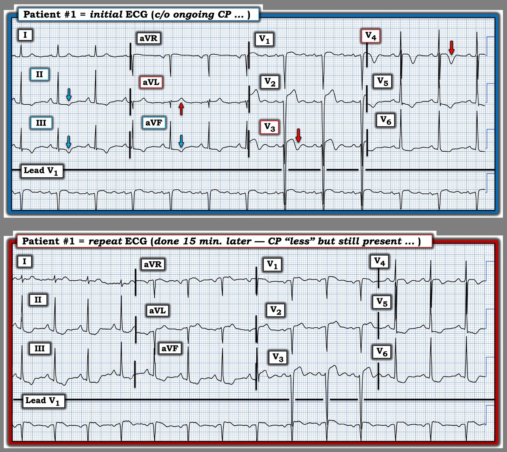
= = =
= = =